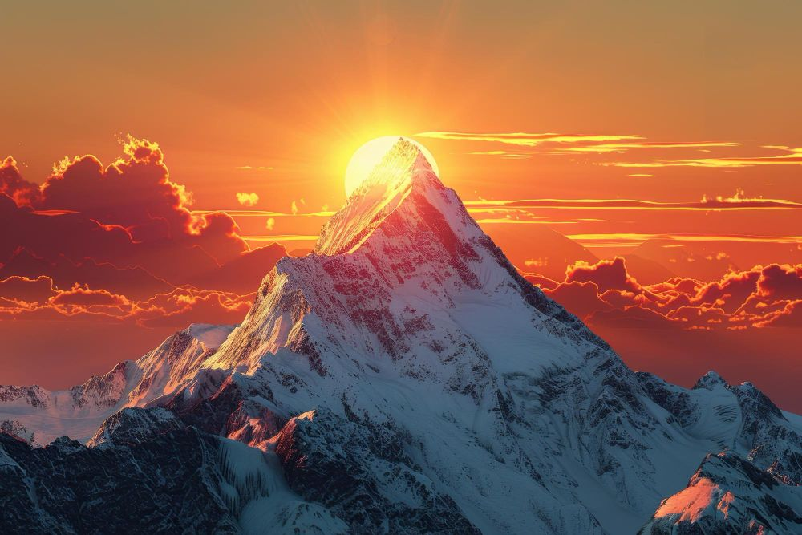
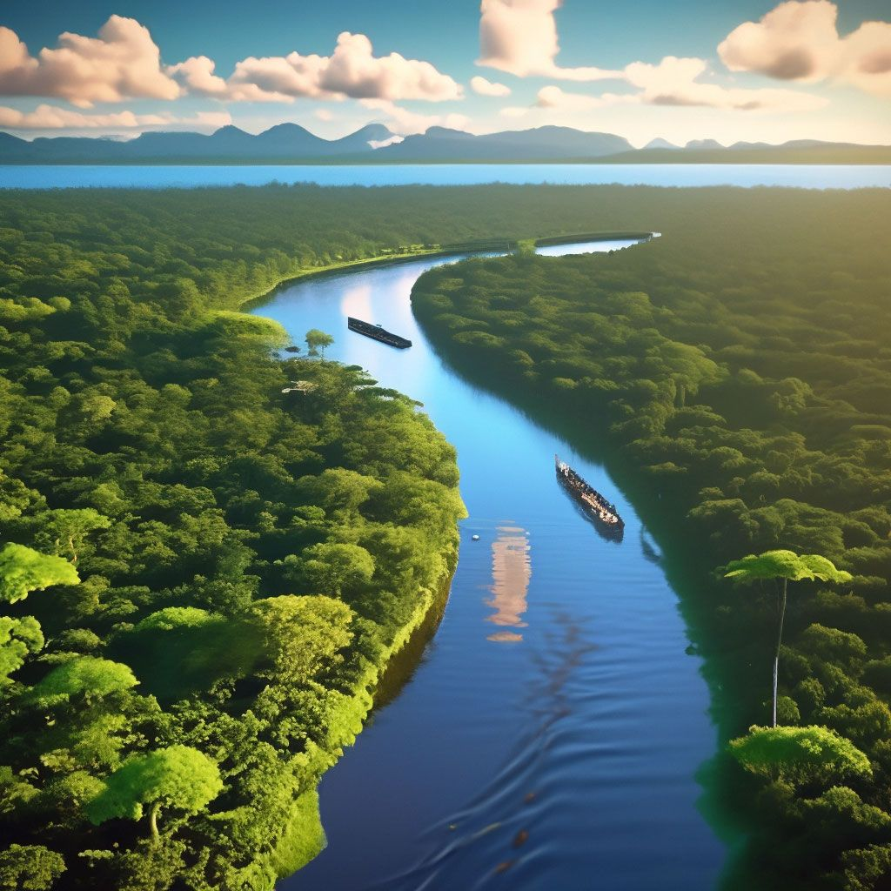
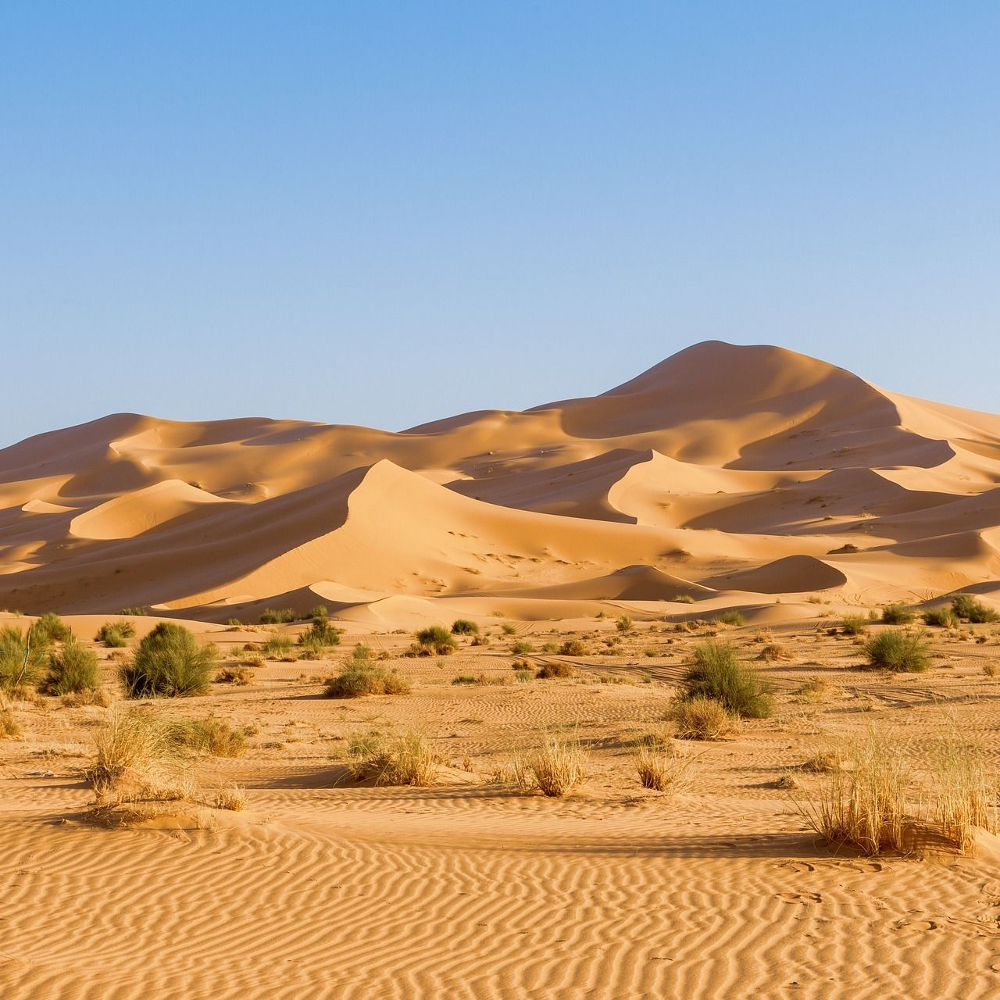
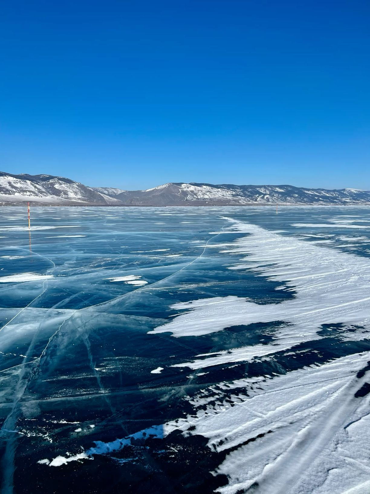
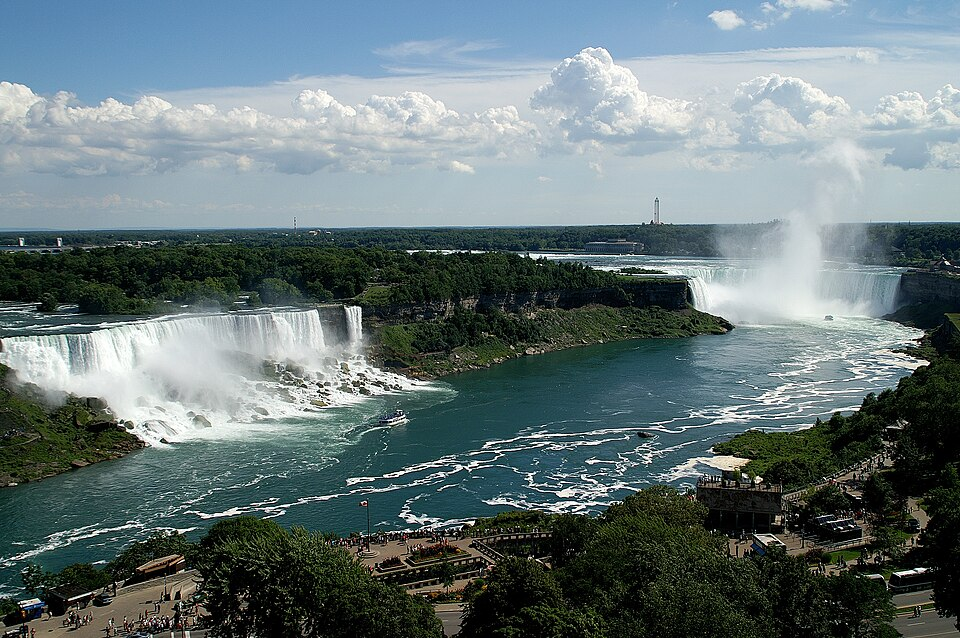

Эверест (Джомолунгма) — высочайшая вершина Земли, её высота составляет 8848,86 метра над уровнем моря. Гора расположена в Гималаях на границе Непала и Китая. Первое успешное восхождение совершили Эдмунд Хиллари и Тенцинг Норгей в 1953 году.

Амазонка — самая полноводная река мира, протекающая через Южную Америку. Её бассейн занимает около 7 миллионов км². В Амазонке и её притоках обитает более 2000 видов рыб, включая знаменитую пиранью.

Сахара — крупнейшая жаркая пустыня планеты, занимающая около 9 миллионов км² в Северной Африке. Температура днём может превышать +50 °C, а ночью опускаться до 0 °C. Несмотря на суровые условия, здесь обитают верблюды, фенеки и скорпионы.

Байкал — самое глубокое озеро на Земле (1642 м) и крупнейший природный резервуар пресной воды. Находится в Сибири, в России. Возраст озера — около 25 миллионов лет, а вода в нём настолько прозрачна, что видно на глубину до 40 метров.

Ниагарский водопад расположен на границе США и Канады между озёрами Эри и Онтарио. Он состоит из трёх водопадов, крупнейший из которых — "Подкова". Каждую секунду через водопад проходит около 2800 м³ воды.